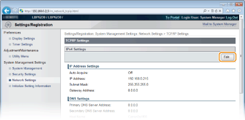
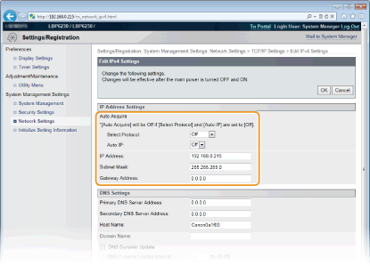

Setting IPv4 Address
 |
The machine's IPv4 address can be either assigned automatically by a dynamic IP addressing protocol, such as DHCP, or entered manually. When connecting the machine to a wired LAN, make sure that the connectors of the LAN cable are firmly inserted into the ports (Connecting to a Wired LAN).
|
1
Start the Remote UI and log on in System Manager Mode. Starting the Remote UI
2
Click [Settings/Registration].

3
Click [Network Settings]  [TCP/IP Settings].
[TCP/IP Settings].

4
Click [Edit] in [IPv4 Settings].

5
Set the IP address.

 Automatically assigning an IP address
Automatically assigning an IP address
|
1
|
In the [Select Protocol] list, select [DHCP], [BOOTP], or [RARP].
 If you do not want to use DHCP/BOOTP/RARP to assign an IP address automatically
Select [Off]. If you select the [DHCP], [BOOTP], or [RARP] protocol when these services are unavailable, the machine will waste time and communications resources searching the network for these services.
|
|
2
|
Check that [Auto IP] is set to [On].
If [Off] is selected, change the setting to [On].
Even if Auto IP is enabled, IP addresses assigned via DHCP/BOOTP/RARP override an address obtained via Auto IP. |
Manually entering an IP address
|
1
|
Select [Off] for [Select Protocol] and [Auto IP].
|
|
2
|
Set the [IP Address], [Subnet Mask], and [Gateway Address] fields.
|
6
Click [OK].
7
Restart the machine.
Turn OFF the machine, wait for at least 10 seconds, and turn it back ON.
 |
Checking whether the settings are correctMake sure that the Remote UI screen can be displayed with your computer. Starting the Remote UI
If you change the IP address after installing the printer driverIf you are using an MFNP port, and the machine and the computer are in the same subnet, then the connection will be maintained. You do not need to add a new port. If you are using a standard TCP/IP port, then you need to add a new port. Configuring Printer Ports
* If you are not sure which type of port you are using, see Checking the Printer Port.
|